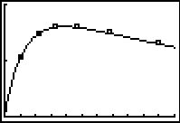

Funções Polinomiais e Racionais
15 Funções Racionais
Resumo do capítulo
Uma função racional é o quociente de dois polinômios, e seu domínio exclui os zeros do denominador. O capítulo ensina a localizar assíntotas verticais, horizontais e oblíquas, além de identificar buracos (descontinuidades removíveis) no gráfico, para então esboçá-lo com precisão.
Nos exercícios 1 - 18, para a função racional $f$ dada:
- Encontre o domínio de $f$.
- Identifique quaisquer assíntotas verticais ao gráfico de $y = f(x)$.
- Identifique quaisquer lacunas no gráfico.
- Encontre as assíntotas horizontais, caso existam.
- Encontre as assíntotas oblíquas, caso existam.
- Trace o gráfico da função usando o GeoGebra e descreva o comportamento próximo às assíntotas.
- $f(x) = \dfrac{x}{3x - 6}$
domínio: $(-\infty, 2) \cup (2, \infty)$
Assíntota vertical: $x = 2$
Quando $x \rightarrow 2^{-}, f(x) \rightarrow -\infty$
Quando $x \rightarrow 2^{+}, f(x) \rightarrow \infty$
Nenhuma lacuna no gráfico
Assíntota horizontal: $y = \frac{1}{3}$
Quando $x \rightarrow -\infty, f(x) \rightarrow \frac{1}{3}^{-}$
Quando $x \rightarrow \infty, f(x) \rightarrow \frac{1}{3}^{+}$ - $f(x) = \dfrac{3 + 7x}{5 - 2x}$resposta$f(x) = \dfrac{3 + 7x}{5 - 2x}$
domínio: $(-\infty, \frac{5}{2}) \cup (\frac{5}{2}, \infty)$
Assíntota vertical: $x = \frac{5}{2}$
Quando $x \rightarrow \frac{5}{2}^{-}, f(x) \rightarrow \infty$
Quando $x \rightarrow \frac{5}{2}^{+}, f(x) \rightarrow -\infty$
Nenhuma lacuna no gráfico
Assíntota horizontal: $y = -\frac{7}{2}$
Quando $x \rightarrow -\infty, f(x) \rightarrow -\frac{7}{2}^{+}$
Quando $x \rightarrow \infty, f(x) \rightarrow -\frac{7}{2}^{-}$ - $f(x) = \dfrac{x}{x^{2} + x - 12}$resposta$f(x) = \dfrac{x}{x^{2} + x - 12} = \dfrac{x}{(x + 4)(x - 3)}$
domínio: $(-\infty, -4) \cup (-4, 3) \cup (3, \infty)$
Assíntotas verticais: $x = -4, x = 3$
Quando $x \rightarrow -4^{-}, f(x) \rightarrow -\infty$
Quando $x \rightarrow -4^{+}, f(x) \rightarrow \infty$
Quando $x \rightarrow 3^{-}, f(x) \rightarrow -\infty$
Quando $x \rightarrow 3^{+}, f(x) \rightarrow \infty$
Nenhuma lacuna no gráfico
Assíntota horizontal: $y = 0$
Quando $x \rightarrow -\infty, f(x) \rightarrow 0^{-}$
Quando $x \rightarrow \infty, f(x) \rightarrow 0^{+}$
- $f(x) = \dfrac{x}{x^{2} + 1}$resposta$f(x) = \dfrac{x}{x^{2} + 1}$
domínio: $(-\infty, \infty)$
Nenhuma assíntota vertical
Nenhuma lacuna no gráfico
Assíntota horizontal: $y = 0$
Quando $x \rightarrow -\infty, f(x) \rightarrow 0^{-}$
Quando $x \rightarrow \infty, f(x) \rightarrow 0^{+}$ - $f(x) = \dfrac{x + 7}{(x + 3)^{2}}$resposta$f(x) = \dfrac{x + 7}{(x + 3)^{2}}$
domínio: $(-\infty, -3) \cup (-3, \infty)$
Assíntota vertical: $x = -3$
Quando $x \rightarrow -3^{-}, f(x) \rightarrow \infty$
Quando $x \rightarrow -3^{+}, f(x) \rightarrow \infty$
Nenhuma lacuna no gráfico
Assíntota horizontal: $y = 0$
Quando $x \rightarrow -\infty, f(x) \rightarrow 0^{-}$
Quando $x \rightarrow \infty, f(x) \rightarrow 0^{+}$ - $f(x) = \dfrac{x^{3} + 1}{x^{2} - 1}$resposta$f(x) = \dfrac{x^{3} + 1}{x^{2} - 1} = \dfrac{x^{2} - x+ 1}{x-1}$
domínio: $(-\infty, -1) \cup (-1, 1) \cup (1, \infty)$
Assíntota vertical: $x = 1$
Quando $x \rightarrow 1^{-}, f(x) \rightarrow -\infty$
Quando $x \rightarrow 1^{+}, f(x) \rightarrow \infty$
Lacuna em $(-1, -\frac{3}{2})$
Assíntota oblíqua: $y=x$
Quando $x \rightarrow -\infty$, o gráfico está abaixo de $y=x$
Quando $x \rightarrow \infty$, o gráfico está acima de $y=x$
- $f(x) = \dfrac{4x}{x^2+4}$resposta$f(x) = \dfrac{4x}{x^{2} + 4}$
domínio: $(-\infty, \infty)$
Nenhuma assíntota vertical
Nenhuma lacuna no gráfico
Assíntota horizontal: $y = 0$
Quando $x \rightarrow -\infty, f(x) \rightarrow 0^{-}$
Quando $x \rightarrow \infty, f(x) \rightarrow 0^{+}$ - $f(x) = \dfrac{4x}{x^2-4}$resposta$f(x) = \dfrac{4x}{x^{2} -4} = \dfrac{4x}{(x + 2)(x - 2)}$
domínio: $(-\infty, -2) \cup (-2, 2) \cup (2, \infty)$
Assíntotas verticais: $x = -2, x = 2$
Quando $x \rightarrow -2^{-}, f(x) \rightarrow -\infty$
Quando $x \rightarrow -2^{+}, f(x) \rightarrow \infty$
Quando $x \rightarrow 2^{-}, f(x) \rightarrow -\infty$
Quando $x \rightarrow 2^{+}, f(x) \rightarrow \infty$
Nenhuma lacuna no gráfico
Assíntota horizontal: $y = 0$
Quando $x \rightarrow -\infty, f(x) \rightarrow 0^{-}$
Quando $x \rightarrow \infty, f(x) \rightarrow 0^{+}$ - $f(x) = \dfrac{x^2-x-12}{x^2+x-6}$resposta$f(x) = \dfrac{x^2-x-12}{x^{2} +x - 6} = \dfrac{x-4}{x - 2}$
domínio: $(-\infty, -3) \cup (-3, 2) \cup (2, \infty)$
Assíntota vertical: $x = 2$
Quando $x \rightarrow 2^{-}, f(x) \rightarrow \infty$
Quando $x \rightarrow 2^{+}, f(x) \rightarrow -\infty$
Lacuna em $\left(-3, \frac{7}{5} \right)$
Assíntota horizontal: $y = 1$
Quando $x \rightarrow -\infty, f(x) \rightarrow 1^{+}$
Quando $x \rightarrow \infty, f(x) \rightarrow 1^{-}$
- $f(x) = \dfrac{3x^2-5x-2}{x^2-9}$resposta$f(x) = \dfrac{3x^2-5x-2}{x^{2} -9} = \dfrac{(3x+1)(x-2)}{(x + 3)(x - 3)}$
domínio: $(-\infty, -3) \cup (-3, 3) \cup (3, \infty)$
Assíntotas verticais: $x = -3, x = 3$
Quando $x \rightarrow -3^{-}, f(x) \rightarrow \infty$
Quando $x \rightarrow -3^{+}, f(x) \rightarrow -\infty$
Quando $x \rightarrow 3^{-}, f(x) \rightarrow -\infty$
Quando $x \rightarrow 3^{+}, f(x) \rightarrow \infty$
Nenhuma lacuna no gráfico
Assíntota horizontal: $y = 3$
Quando $x \rightarrow -\infty, f(x) \rightarrow 3^{+}$
Quando $x \rightarrow \infty, f(x) \rightarrow 3^{-}$ - $f(x) = \dfrac{x^3+2x^2+x}{x^2-x-2}$resposta$f(x) = \dfrac{x^3+2x^2+x}{x^{2} -x-2} = \dfrac{x(x+1)}{x - 2}$
domínio: $(-\infty, -1) \cup (-1, 2) \cup (2, \infty)$
Assíntota vertical: $x = 2$
Quando $x \rightarrow 2^{-}, f(x) \rightarrow -\infty$
Quando $x \rightarrow 2^{+}, f(x) \rightarrow \infty$
Lacuna $(-1,0)$
Assíntota oblíqua: $y=x+3$
Quando $x \rightarrow -\infty$, o gráfico está abaixo de $y=x+3$
Quando $x \rightarrow \infty$, o gráfico está acima de $y=x+3$ - $f(x) = \dfrac{x^{3} - 3x + 1}{x^{2} + 1}$resposta$f(x) = \dfrac{x^3-3x+1}{x^2+1}$
domínio: $(-\infty, \infty)$
Nenhuma assíntota vertical
Nenhuma lacuna no gráfico
Assíntota oblíqua: $y=x$
Quando $x \rightarrow -\infty$, o gráfico está acima de $y=x$
Quando $x \rightarrow \infty$, o gráfico está abaixo de $y=x$
- $f(x) = \dfrac{2x^{2} + 5x - 3}{3x + 2}$resposta$f(x) = \dfrac{2x^{2} + 5x - 3}{3x + 2}$
domínio: $\left(-\infty, -\frac{2}{3}\right) \cup \left(-\frac{2}{3}, \infty\right)$
Assíntota vertical: $x = -\frac{2}{3}$
Quando $x \rightarrow -\frac{2}{3}^{-}, f(x) \rightarrow \infty$
Quando $x \rightarrow -\frac{2}{3}^{+}, f(x) \rightarrow -\infty$
Nenhuma lacuna no gráfico
Assíntota oblíqua: $y = \frac{2}{3}x + \frac{11}{9}$
Quando $x \rightarrow -\infty$, o gráfico está acima de $y = \frac{2}{3}x + \frac{11}{9}$
Quando $x \rightarrow \infty$, o gráfico está abaixo de $y = \frac{2}{3}x + \frac{11}{9}$ - $f(x) = \dfrac{-x^{3} + 4x}{x^{2} - 9}$resposta$f(x) = \dfrac{-x^{3} + 4x}{x^{2} - 9} = \dfrac{-x^{3} + 4x}{(x-3)(x+3)} $
domínio: $(-\infty, -3) \cup (-3, 3) \cup (3, \infty)$
Assíntotas verticais: $x = -3$, $x=3$
Quando $x \rightarrow -3^{-}, f(x) \rightarrow \infty$
Quando $x \rightarrow -3^{+}, f(x) \rightarrow -\infty$
Quando $x \rightarrow 3^{-}, f(x) \rightarrow \infty$
Quando $x \rightarrow 3^{+}, f(x) \rightarrow -\infty$
Nenhuma lacuna no gráfico
Assíntota oblíqua: $y=-x$
Quando $x \rightarrow -\infty$, o gráfico está acima de $y=-x$
Quando $x \rightarrow \infty$, o gráfico está abaixo de $y=-x$ - $f(x) = \dfrac{-5x^{4} - 3x^{3} + x^{2} - 10}{x^{3} - 3x^{2} + 3x - 1}$resposta$f(x) = \dfrac{-5x^{4} - 3x^{3} + x^{2} - 10}{x^{3} - 3x^{2} + 3x - 1} \\ \phantom{f(x)} = \dfrac{-5x^{4} - 3x^{3} + x^{2} - 10}{(x-1)^3} $
domínio: $(-\infty, 1) \cup (1, \infty)$
Assíntotas verticais: $x = 1$
Quando $x \rightarrow 1^{-}, f(x) \rightarrow \infty$
Quando $x \rightarrow 1^{+}, f(x) \rightarrow -\infty$
Nenhuma lacuna no gráfico
Assíntota oblíqua: $y=-5x-18$
Quando $x \rightarrow -\infty$, o gráfico está acima de $y=-5x-18$
Quando $x \rightarrow \infty$, o gráfico está abaixo de $y=-5x-18$
- $f(x) = \dfrac{x^3}{1-x}$resposta$f(x) = \dfrac{x^3}{1-x}$
domínio: $(-\infty, 1) \cup (1, \infty)$
Assíntota vertical: $x=1$
Quando $x \rightarrow 1^{-}, f(x) \rightarrow \infty$
Quando $x \rightarrow 1^{+}, f(x) \rightarrow -\infty$
Nenhuma lacuna no gráfico
Nenhuma assíntota horizontal ou oblíqua
Quando $x \rightarrow -\infty$, $f(x) \rightarrow -\infty$
Quando $x \rightarrow \infty$, $f(x) \rightarrow -\infty$ - $f(x) = \dfrac{18-2x^2}{x^2-9}$resposta$f(x) = \dfrac{18-2x^2}{x^2-9} = -2$
domínio: $(-\infty, -3) \cup (-3,3) \cup (3, \infty)$
Nenhuma assíntota vertical
Lacunas no gráfico em $(-3,-2)$ e $(3,-2)$
Assíntota horizontal $y = -2$
Quando $x \rightarrow \pm \infty$, $f(x) = -2$ - $f(x) = \dfrac{x^3-4x^2-4x-5}{x^2+x+1} = x-5$
domínio: $(-\infty, \infty)$
Nenhuma assíntota vertical
Nenhuma lacuna no gráfico
Assíntota oblíqua: $y = x-5$
$f(x) = x-5$ em todo ponto.
- O custo $C$ em dólares para remover $p$\% das espécies de peixe invasoras de uma lagoa é dada por \[C(p) = \frac{1770p}{100 - p}, \quad 0 \leq p < 100 \]resposta
- Encontre e interprete $C(25)$ e $C(95)$.
- O que a assíntota vertical em $x = 100$ significa no contexto do problema?
- Que porcentagem de peixes invasores pode-se remover com \$40000?
- $C(25) = 590$ significa que custa \$590 para remover 25\% dos peixes e $C(95)= 33630$ significa que custaria \$33630 para remover 95\% dos peixes da lagoa.
- A assíntota vertical em $x = 100$ significa que a medida que tentamos remover 100\% dos peixes da lagoa, o custo aumenta sem limite, i.e., é impossível remover todos os peixes.
- Por \$40000 é possível remover cerca de 95.76\% dos peixes.
- No exercício 71 da Capítulo 4, a população de Mapinguaris do Amazonas foi modelada pela função \[P(t) = \frac{150t}{t + 15},\] onde $t = 0$ representa o ano de 1803. Encontre a assíntota horizontal ao gráfico de $y = P(t)$ e explique o que ela significa.respostaA assíntota horizontal do gráfico de $P(t) = \frac{150t}{t + 15}$ é $y = 150$ e isso significa que o modelo prevê que a população de mapinguaris no Amazonas nunca excederá 150.
- O custo $C$ (em dólares) para fazer $x$ tocadores de mp3 é $C(x) = 100x+2000$, $x \geq 0$.resposta
- Encontre a formula para o custo médio $\overline{C}(x)$, onde $\overline{C}(x) = \frac{C(x)}{x}$.
- Encontre e interprete $\overline{C}(1)$ e $\overline{C}(100)$.
- Quantos tocadores precisam ser produzidos para que o custo médio seja $\$ 200$?
- Interprete o comportamento de $\overline{C}(x)$ quando $x \rightarrow 0^{+}$. (Dica: encontre o custo fixo $C(0)$ primeiro para ajudar sua interpretação.)
- Interprete o comportamento de $\overline{C}(x)$ quando $x \rightarrow \infty$.
- $\overline{C}(x) = \frac{100x+2000}{x}$, $x > 0$.
- $\overline{C}(1) = 2100$ e $\overline{C}(100) = 120$. Quando apenas $1$ tocador é produzido, o custo por tocador é $\$2100$, mas quando $100$ são produzidos, o custo por tocador é de $\$120$.
- $\overline{C}(x) = 200$ quando $x = 20$. Portanto para se chegar ao custo de $\$200$ por tocador, $20$ precisam ser produzidos.
- Quando $x \rightarrow 0^{+}$, $\overline{C}(x) \rightarrow \infty$. Isso significa que quando menos e menos tocadores são produzidos, o custo por tocador se torna ilimitado. Nesta situação, existe um custo fixo de $\$2000$ ($C(0) = 2000$) que tentamos dividir entre cada vez menos tocadores.
- Quando $x \rightarrow \infty$, $\overline{C}(x) \rightarrow 100^{+}$. Isso significa que quando mais e mais tocadores são produzidos, o custo médio por tocador se aproxima de $\$100$, mas é sempre um pouco maior que $\$100$. Uma vez que $\$100$ é o custo por tocador ($C(x) = \underline{100}x+2000$), isso significa que o custo médio é sempre um pouco maior que o custo unitário, pois estamos distribuindo o custo fixo para cada tocador.
- Usando as leis de análise de circuito elétrico, é possível mostrar que a potência $P$ em um determinado circuito está relacionada à resistência $x$ pela fórmula $P(x) = \frac{25x}{(x + 3.9)^2},$ com $x \geq 0$.resposta
- Trace o gráfico da função $y = P(x)$ no GeoGebra.
- Use o GeoGebra para encontrar o valor aproximado da potência máxima. Qual o valor da resistência correspondente?
- Encontre e interprete o comportamento de $P(x)$ quando $x \rightarrow \infty$.
- $~$

- A potência máxima é aproximadamente $1.603 \; mW$ o que corresponde a $3.9 \; k\Omega$.
- Quando $x \rightarrow \infty, \; P(x) \rightarrow 0^{+}$ o que significa que quando a resistência cresce sem limite, a potência diminui para zero.